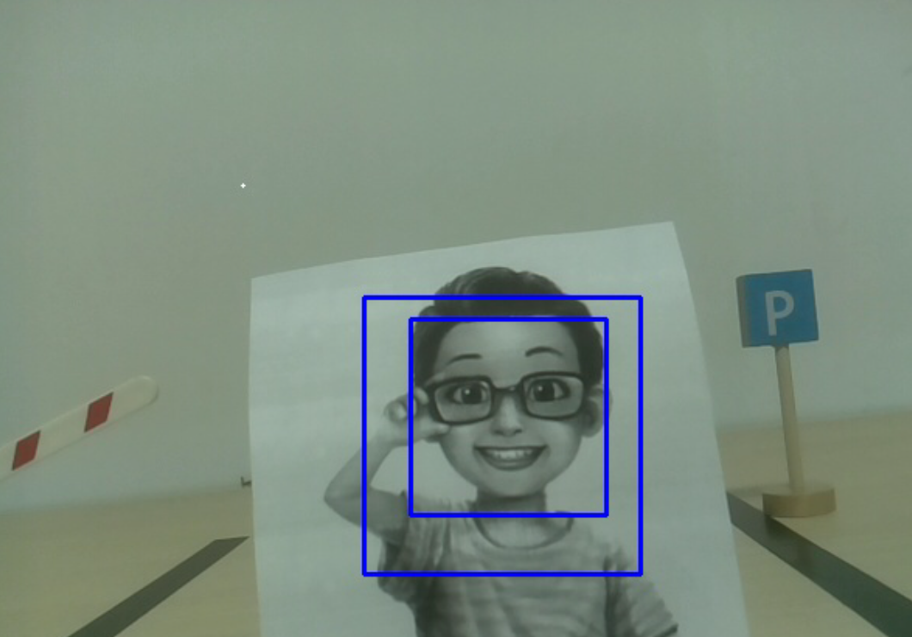

7. コンピュータービジョン¶
このプロジェクトでは、コンピュータービジョンの分野に正式に入ります！
コードの実行
cd ~/picar-x/example
sudo python3 7.display.py
画像の表示
コードを実行すると、ターミナルに次のプロンプトが表示されます：
No desktop !
* Serving Flask app "vilib.vilib" (lazy loading)
* Environment: production
WARNING: Do not use the development server in a production environment.
Use a production WSGI server instead.
* Debug mode: off
* Running on http://0.0.0.0:9000/ (Press CTRL+C to quit)
次に、ブラウザで http://<your IP>:9000/mjpg にアクセスして、ビデオ画面を表示できます。例えば： https://192.168.18.113:9000/mjpg

プログラムを実行すると、最後に以下の情報が表示されます：
機能を呼び出すためにキーを入力してください！
q: 写真を撮る
1: 色の検出 : 赤
2: 色の検出 : オレンジ
3: 色の検出 : 黄色
4: 色の検出 : 緑
5: 色の検出 : 青
6: 色の検出 : 紫
0: 色の検出をオフにする
r: QRコードをスキャン
f: 顔の検出をオン/オフに切り替える
s: 検出されたオブジェクトの情報を表示
プロンプトに従って、対応する機能をアクティブにしてください。
写真を撮る
ターミナルで
qと入力してEnterを押します。カメラが現在見ている画像が保存されます（色の検出機能がオンになっている場合は、保存された画像にマークボックスも表示されます）。 Raspberry Piの/home/{username}/Pictures/ディレクトリからこれらの写真を見ることができます。 Filezillaソフトウェア のようなツールを使用して、写真をPCに転送できます。色の検出
1〜6の間の数字を入力すると、「赤、オレンジ、黄色、緑、青、紫」のうちの一つの色を検出します。0を入力すると、色の検出をオフにします。
Note
色の検出には
PDFカラーカードをダウンロードして印刷することができます。顔の検出

fと入力して顔の検出をオンにします。QRコードの検出
rと入力してQRコード認識を開きます。QRコードが認識されるまで他の操作はできません。QRコードのデコード情報がターミナルに表示されます。
情報の表示
sと入力すると、ターミナルに顔の検出（および色の検出）対象の情報が表示されます。測定されたオブジェクトの中心座標（X、Y）とサイズ（幅、高さ）を含みます。
コード
from pydoc import text
from vilib import Vilib
from time import sleep, time, strftime, localtime
import threading
import readchar
import os
flag_face = False
flag_color = False
qr_code_flag = False
manual = '''
Input key to call the function!
q: Take photo
1: Color detect : red
2: Color detect : orange
3: Color detect : yellow
4: Color detect : green
5: Color detect : blue
6: Color detect : purple
0: Switch off Color detect
r: Scan the QR code
f: Switch ON/OFF face detect
s: Display detected object information
'''
color_list = ['close', 'red', 'orange', 'yellow',
'green', 'blue', 'purple',
]
def face_detect(flag):
print("Face Detect:" + str(flag))
Vilib.face_detect_switch(flag)
def qrcode_detect():
global qr_code_flag
if qr_code_flag == True:
Vilib.qrcode_detect_switch(True)
print("Waitting for QR code")
text = None
while True:
temp = Vilib.detect_obj_parameter['qr_data']
if temp != "None" and temp != text:
text = temp
print('QR code:%s'%text)
if qr_code_flag == False:
break
sleep(0.5)
Vilib.qrcode_detect_switch(False)
def take_photo():
_time = strftime('%Y-%m-%d-%H-%M-%S',localtime(time()))
name = 'photo_%s'%_time
username = os.getlogin()
path = f"/home/{username}/Pictures/"
Vilib.take_photo(name, path)
print('photo save as %s%s.jpg'%(path,name))
def object_show():
global flag_color, flag_face
if flag_color is True:
if Vilib.detect_obj_parameter['color_n'] == 0:
print('Color Detect: None')
else:
color_coodinate = (Vilib.detect_obj_parameter['color_x'],Vilib.detect_obj_parameter['color_y'])
color_size = (Vilib.detect_obj_parameter['color_w'],Vilib.detect_obj_parameter['color_h'])
print("[Color Detect] ","Coordinate:",color_coodinate,"Size",color_size)
if flag_face is True:
if Vilib.detect_obj_parameter['human_n'] == 0:
print('Face Detect: None')
else:
human_coodinate = (Vilib.detect_obj_parameter['human_x'],Vilib.detect_obj_parameter['human_y'])
human_size = (Vilib.detect_obj_parameter['human_w'],Vilib.detect_obj_parameter['human_h'])
print("[Face Detect] ","Coordinate:",human_coodinate,"Size",human_size)
def main():
global flag_face, flag_color, qr_code_flag
qrcode_thread = None
Vilib.camera_start(vflip=False,hflip=False)
Vilib.display(local=True,web=True)
print(manual)
while True:
# readkey
key = readchar.readkey()
key = key.lower()
# take photo
if key == 'q':
take_photo()
# color detect
elif key != '' and key in ('0123456'): # '' in ('0123') -> True
index = int(key)
if index == 0:
flag_color = False
Vilib.color_detect('close')
else:
flag_color = True
Vilib.color_detect(color_list[index]) # color_detect(color:str -> color_name/close)
print('Color detect : %s'%color_list[index])
# face detection
elif key =="f":
flag_face = not flag_face
face_detect(flag_face)
# qrcode detection
elif key =="r":
qr_code_flag = not qr_code_flag
if qr_code_flag == True:
if qrcode_thread == None or not qrcode_thread.is_alive():
qrcode_thread = threading.Thread(target=qrcode_detect)
qrcode_thread.setDaemon(True)
qrcode_thread.start()
else:
if qrcode_thread != None and qrcode_thread.is_alive():
# wait for thread to end
qrcode_thread.join()
print('QRcode Detect: close')
# show detected object information
elif key == "s":
object_show()
sleep(0.5)
if __name__ == "__main__":
main()
どのように動作するのか？
ここで注意するべき最初のことは、次の機能です。これらの2つの機能により、カメラを起動できます。
Vilib.camera_start()
Vilib.display()
「オブジェクト検出」に関連する機能：
Vilib.face_detect_switch(True): 顔検出のオン/オフ切替Vilib.color_detect(color): 色検出について、一度に1色の検出のみ実行できます。入力できるパラメータは："red","orange","yellow","green","blue","purple"Vilib.color_detect_switch(False): 色検出のオフ切替Vilib.qrcode_detect_switch(False): QRコード検出のオン/オフ切替、QRコードのデコードデータを返します。Vilib.gesture_detect_switch(False): ジェスチャー検出のオン/オフ切替Vilib.traffic_sign_detect_switch(False): 交通標識検出のオン/オフ切替
標的によって検出された情報は detect_obj_parameter = Manager().dict() 辞書に保存されます。
メインプログラムでは、次のように使用できます：
Vilib.detect_obj_parameter['color_x']
辞書のキーとその使い方は、次のリストに示されています：
color_x：検出された色ブロックの中心座標のx値、範囲は0〜320color_y：検出された色ブロックの中心座標のy値、範囲は0〜240color_w：検出された色ブロックの幅、範囲は0〜320color_h：検出された色ブロックの高さ、範囲は0〜240color_n：検出された色パッチの数human_x：検出された人間の顔の中心座標のx値、範囲は0〜320human_y：検出された顔の中心座標のy値、範囲は0〜240human_w：検出された人間の顔の幅、範囲は0〜320human_h：検出された顔の高さ、範囲は0〜240human_n：検出された顔の数traffic_sign_x：検出された交通標識の中心座標のx値、範囲は0〜320traffic_sign_y：検出された交通標識の中心座標のy値、範囲は0〜240traffic_sign_w：検出された交通標識の幅、範囲は0〜320traffic_sign_h：検出された交通標識の高さ、範囲は0〜240traffic_sign_t：検出された交通標識の内容、値のリストは [‘stop’,’right’,’left’,’forward’]gesture_x：検出されたジェスチャーの中心座標のx値、範囲は0〜320gesture_y：検出されたジェスチャーの中心座標のy値、範囲は0〜240gesture_w：検出されたジェスチャーの幅、範囲は0〜320gesture_h：検出されたジェスチャーの高さ、範囲は0〜240gesture_t：検出されたジェスチャーの内容、値のリストは [“paper”,”scissor”,”rock”]qr_date：検出されているQRコードの内容qr_x：検出対象のQRコードの中心座標のx値、範囲は0〜320qr_y：検出対象のQRコードの中心座標のy値、範囲は0〜240qr_w：検出対象のQRコードの幅、範囲は0〜320qr_h：検出対象のQRコードの高さ、範囲は0〜320